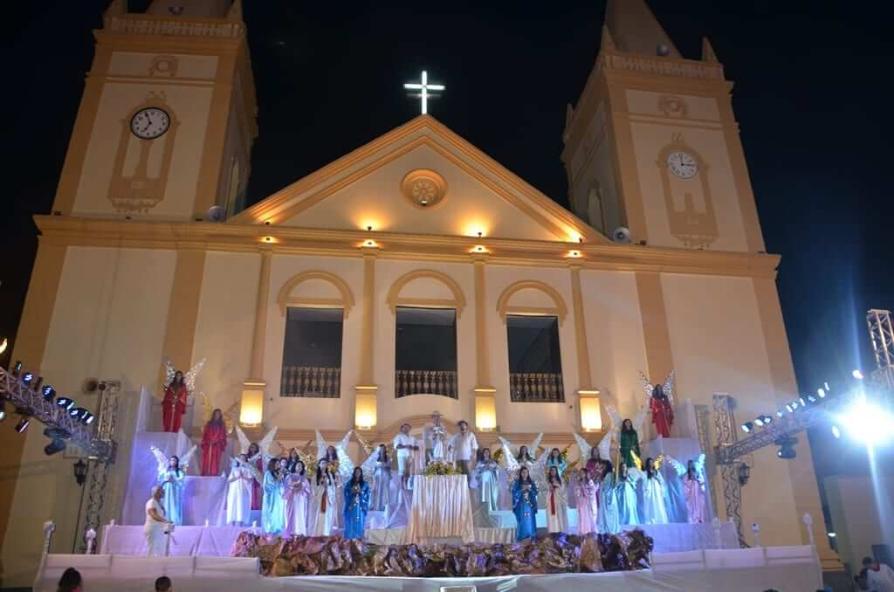
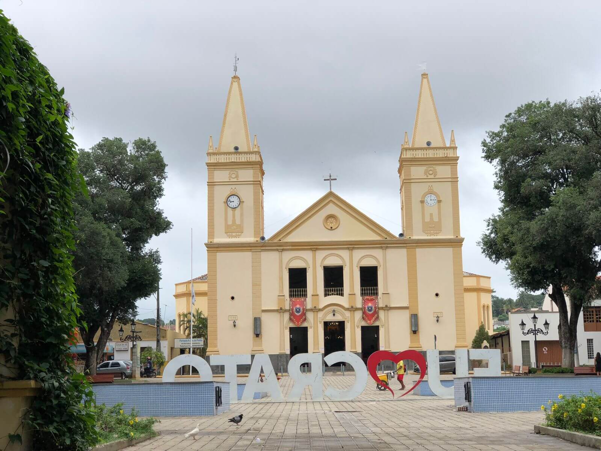
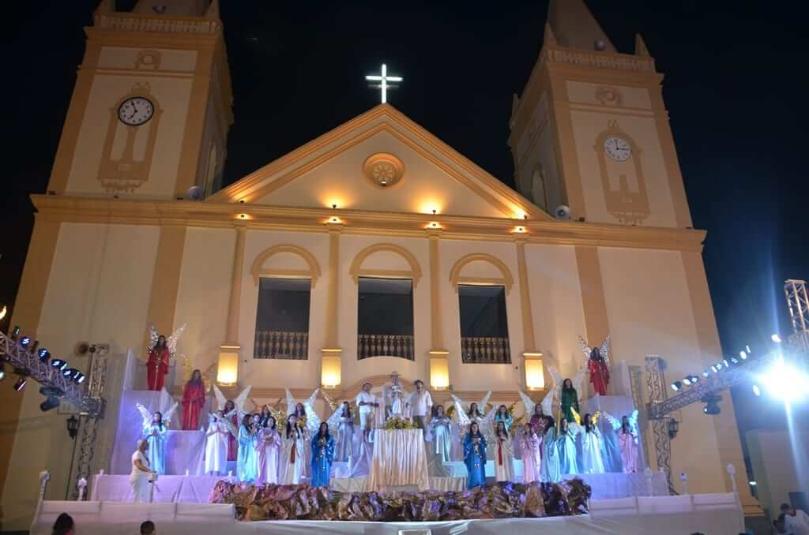
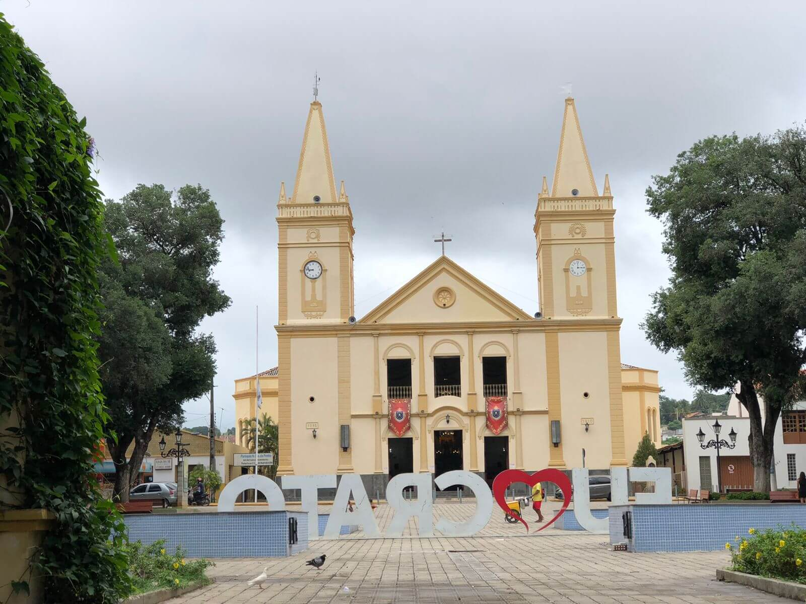
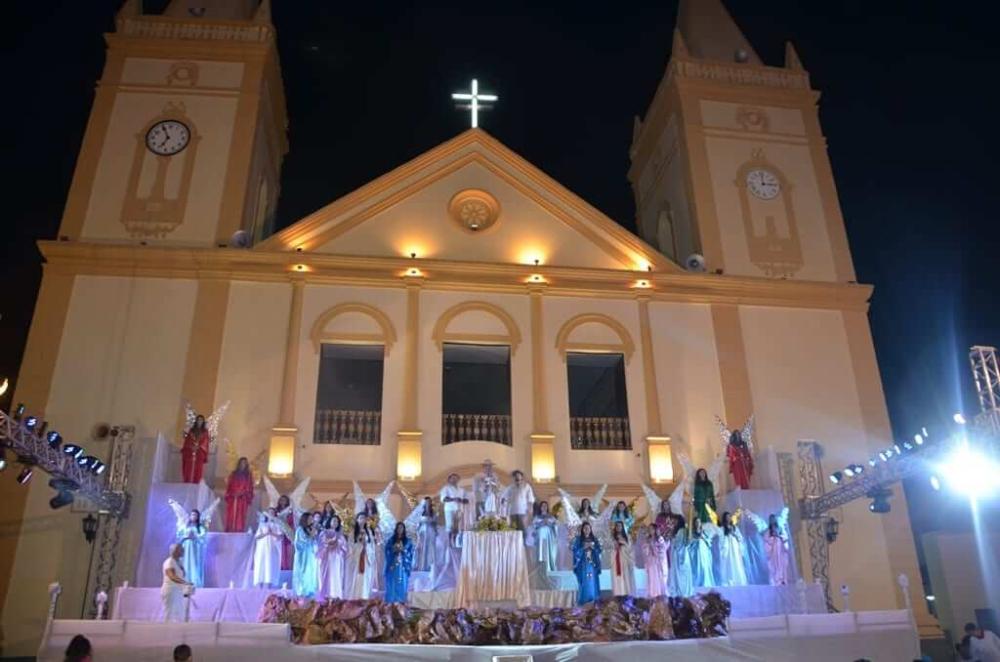
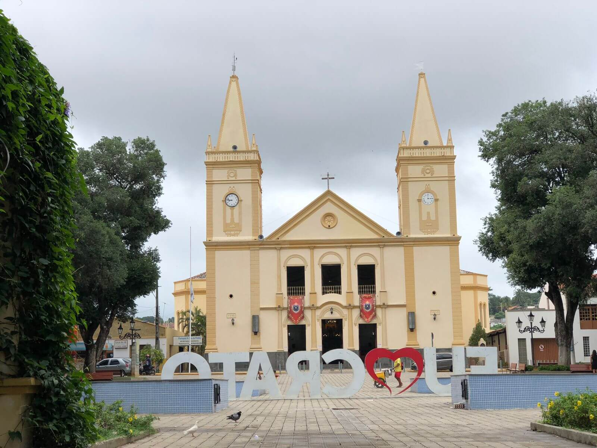

Fotos e Sua Localização
 




A Diocese de Crato está localizada no Crato, Ceará. Para mais detalhes, veja o mapa abaixo:
A Diocese de Crato foi criada em 20 de outubro de 1914, pelo Papa Bento XV, através da bula papal Catholicae Ecclesiae, sendo desmembrada do território da Diocese do Ceará (hoje Arquidiocese de Fortaleza). Sua sede é a Catedral de Nossa Senhora da Penha no município do Crato.
Ela situa-se no extremo sul do Estado do Ceará, limitando-se com as dioceses de Iguatu (Ceará), Cajazeiras (Paraíba), Afogados da Ingazeira e Petrolina (Pernambuco), Picos (Piauí). A sede da Diocese e algumas cidades situam-se no Vale do Cariri e Chapada do Araripe (área marcada pelo verde da vegetação, solo esponjoso calcáreo, camadas superiores do sub-solo de arenito, considerável número de fontes) e sertão que a circunda. Sua abrangência territorial compreende os municípios de: Abaiara, Altaneira, Antonina do Norte, Araripe, Assaré, Aurora, Baixio, Barbalha, Barro, Brejo Santo, Campos Sales, Caririaçu, Crato, Farias Brito, Granjeiro, Ipaumirim, Jadim, Jati, Juazeiro do Norte, Lavras da Mangabeira, Mauriti, Milagres, Missão Velha, Nova Olinda, Porteiras, Potengi, Penaforte, Salitre, Santana do Cariri, Tarrafas, Umari e Várzea Alegre.


A Diocese de Crato está localizada no Crato, Ceará. Para mais detalhes, veja o mapa abaixo: